AltServerPatcher is a utility that patches AltServer to install any IPA from a web URL. This is an effective replacement of Cydia Impactor for Windows and MacOS.
NOTE:
This method requires Windows 10-64bit in order to work.
Make sure iTunes and iCloud are both installed. You will need to have both versions downloaded directly from an internet browser, not through the Microsoft Store. If you have installed iTunes/iCloud from the Microsoft Store, you will need to uninstall that version, and re-install through an internet browser.
iTunes 64bit: iCloud:
After you have installed iTunes and iCloud, ensure you are logged into both of them, using the same Apple ID that you are using on your Apple device. Once you have done this, you can close iTunes and iCloud.
Note: Use your actual password NOT app-specific password.
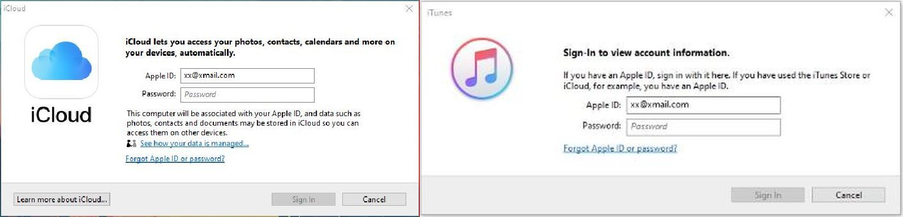
Note: If you're asked if you want to install the Windows version, simply decline.
Download and install AltServer Windows version.
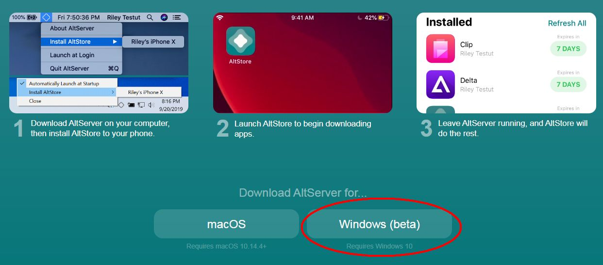
Download and install AltServerPatcher.
Open AltServerPatcher. (If it asks you if you would like to allow the program to make changes to your computer, select “Yes”).
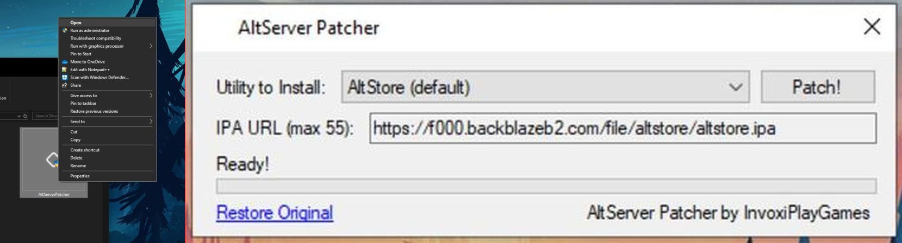
Connect your Apple device to your computer.
Under “Utility to Install”, select “Custom IPA Link”.
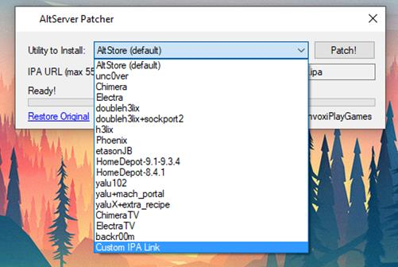
Under "IPA URL", paste the IPA download link into the text box. Make sure you copy the URL exactly.
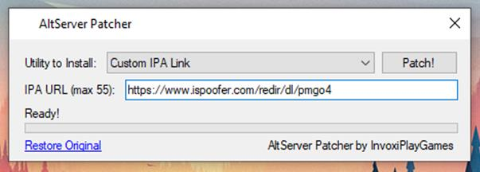
Press "Patch" and allow AltServerPatcher a few seconds to process the IPA link. You should then get a message confirming that AltServer is ready to install the IPA file! Press “OK” to get the confirmation message to go away.
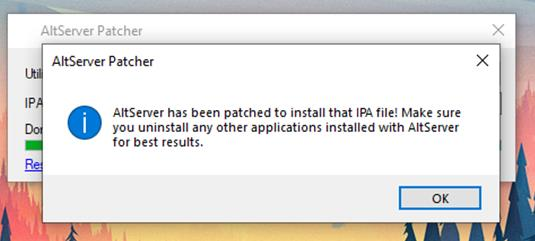
Attempt to open AltServer. It will look like nothing has happened, however in the right corner of the taskbar, you should notice the AltServerPatcher icon has appeared (may appear under hidden icons, just click the arrow and it will appear).
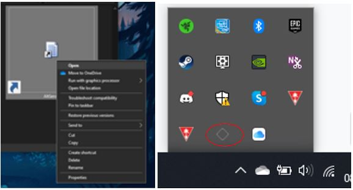
Click on this icon, hover over "Install Altstore" and then click on your Apple device's name that should appear.
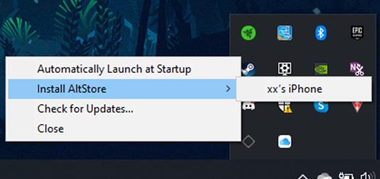
NOTE: It will then ask for a code sent to your phone if you have 2FA enabled.
Enter the Apple ID and password that you are using for your Apple Device, iTunes and iCloud.
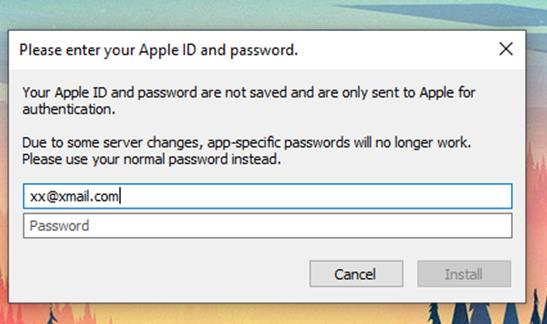
You'll be notified that some apps may not work the same, just ignore this and click "OK/Install".
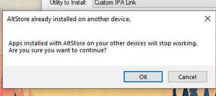
If all steps have been followed correctly, you'll notice a notification will appear in the bottom-right corner of the screen that says "Installing Altstore to (Apple device name)". To clear any confusion, it isn't installing AltStore - it is installing whats on the IPA link.
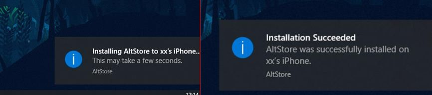
Wait a few minutes (depends on ur internet speed), and the app will appear on your Apple device! Once you can see the app icon on the home screen, you may disconnect your Apple Device from the computer.
On your Apple device, go to Settings --> General --> Device Management --> Apple ID email address and TRUST the app.
That's all, you can now launch the app on your device!
ccto:MWilliamM#1228
FAQ:
Just "right click on the IPA download button and select "copy link address".